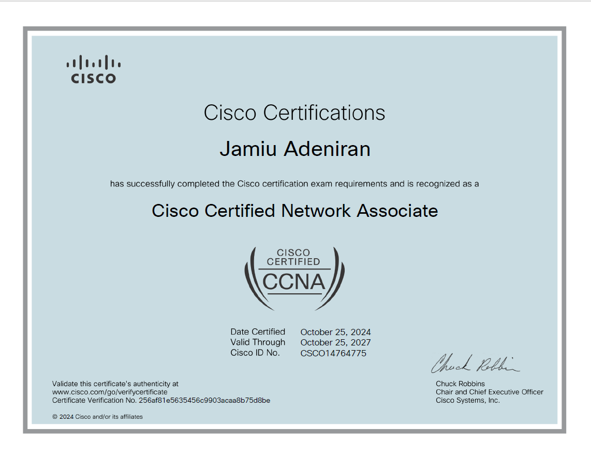
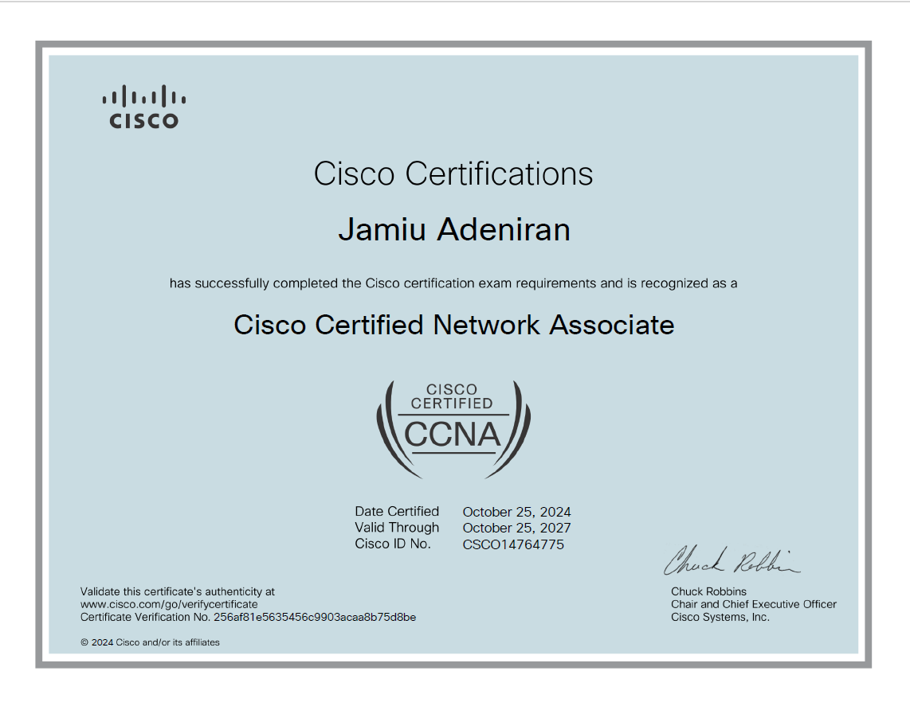

Jamiu Adeniran
Azure DevOps Engineer • Cloud & Platform Reliability
Professional Summary
Azure DevOps Engineer specializing in designing, automating, and operating secure cloud platforms using Infrastructure as Code, CI/CD pipelines, and Azure-native services. Proven experience building production-ready systems with Terraform, PowerShell, and GitHub Actions, including an enterprise procurement and inventory platform that reached 80% customer retention and 15% adoption within its first year.
Brings a full-spectrum background spanning IT support, systems administration, and DevOps engineering, enabling end-to-end ownership of cloud infrastructure, networking, and security. Experienced in delivering highly available Azure environments, automating provisioning workflows, and improving deployment reliability across distributed teams.
Certified in CompTIA Linux+, Security+, and CCNA, with a strong bias toward automation, operational excellence, and continuous improvement. Passionate about building resilient platforms that reduce toil and accelerate delivery.
Certifications

 

Technical Competencies
Cloud Platforms
- Microsoft Azure (Primary)
- AWS, Google Cloud Platform (GCP)
Infrastructure as Code & Automation
- Terraform (Azure-focused)
- Ansible, Chef, Puppet
- Azure CLI, PowerShell Automation
CI/CD & DevOps Pipelines
- GitHub Actions (Primary)
- Jenkins, GitLab CI, Bitbucket Pipelines
- Git, Trunk & Feature Branching Strategies
Containers & Orchestration
- Docker, Podman
- Kubernetes, Helm
Scripting & Systems
- PowerShell, Bash, Python
- Go, Java
- YAML (CI/CD & IaC)
Observability & Reliability
- Prometheus, Grafana
- Monitoring, Alerting, Incident Response
Security & Governance
- Identity & Access Management (IAM)
- Patch Management & Compliance
- Secure Cloud Architecture
Collaboration & Delivery
- Agile & DevOps Practices
- Technical Documentation
- Team Enablement & Knowledge Transfer
Professional Experience
DevOps & Cloud Projects Specialist — Upwork
Jun 2025 – Present- Designed and implemented cloud architectures for multi-tenant clients, improving platform reliability and operational efficiency by 25%.
- Automated infrastructure provisioning and change management using Terraform and CI/CD pipelines.
- Produced architecture diagrams and technical documentation for technical and executive stakeholders.
DevOps Analyst / Product Owner — Alecsa Business Solutions
Aug 2020 – Jul 2023- Led the design and deployment of resilient Azure cloud environments through client discovery and architecture workshops.
- Investigated and resolved production incidents across networking, compute, and application layers.
- Strengthened platform security through continuous updates, configuration hardening, and best practices.
IT Support & Cloud Automation Specialist — MedExpress Pharmacy
Sep 2023 – May 2024- Developed operational procedures aligned with regulatory and compliance requirements.
- Standardized backup, recovery, and system documentation to improve audit readiness and operational consistency.
Featured Projects
Agentic AI & Cloud Automation Platform
A production-inspired automation platform combining containerized observability, workflow orchestration, and AI-assisted incident analysis to improve detection and response in distributed systems.
Key Capabilities
- Prometheus- and Grafana-based monitoring stack deployed via Docker Compose
- Custom Node.js application exporting business and system metrics
- Automated workflows integrating Prometheus APIs and AI-driven enrichment
Measured Impact
- ~40% reduction in incident detection time (MTTD)
- ~50% faster environment rebuilds
- Clearer signal-to-noise ratio for operators
Certifications
- AZ-104 — Microsoft Azure Administrator
- CompTIA Linux+
- CompTIA Security+
- CCNA — Cisco Certified Network Associate